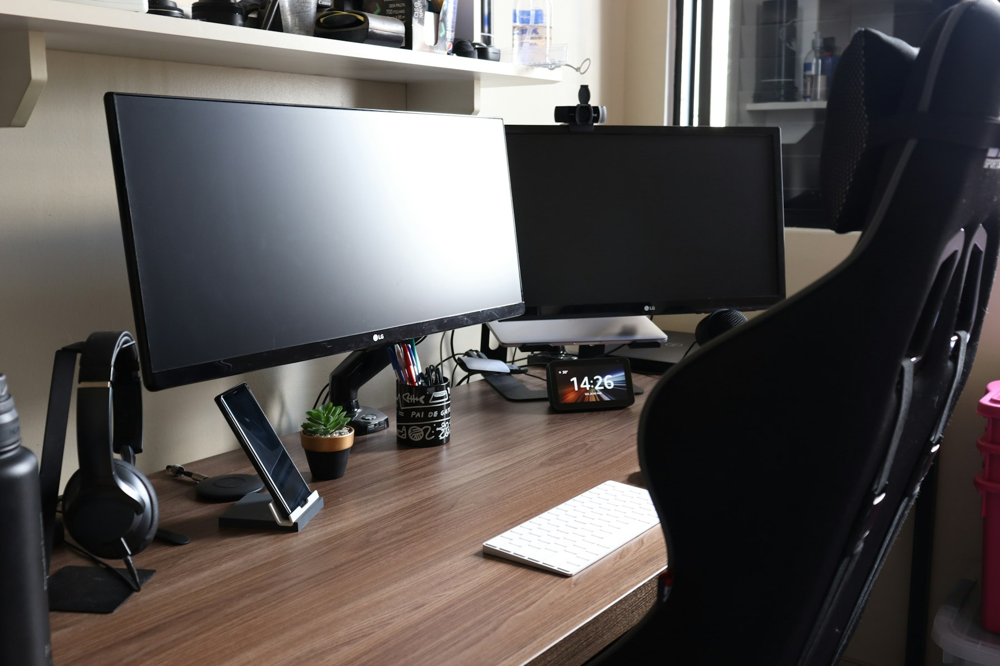

TL;DR
Discover low-cost side hustles ideal for beginners, like online tutoring and dropshipping. Understand hidden costs and plan accordingly. Scale your hustle wisely without major financial risks.
Low-Cost Side Hustles for Newbies
Many aspiring side hustlers are hesitant to start because they mistakenly believe that a significant financial investment is essential. However, several low-cost options are ideal for beginners who want to dip their toes into the side hustle realm without risking significant capital.
For example, you can start freelancing as a writer or graphic designer on platforms like Upwork or Fiverr. Alternatively, launching an online tutoring business or reselling thrift store finds through eBay or Poshmark both require minimal upfront costs.
Engaging in such activities not only enhances your skills but also builds valuable experience in the entrepreneurial landscape.
Why Conventional Side Hustle Advice Falls Short

### Why Conventional Side Hustle Advice Falls Short
Common advice often suggests that anyone can simply start a side hustle with minimal to no investment. While stories of individuals striking it rich abound, these narratives frequently gloss over hidden costs that can drastically affect profitability.
For instance, a freelance graphic designer might be enticed by the idea of working from home, but they could be unaware that platforms like Upwork or Fiverr impose fees that can reach as high as 20%.
This means that if a designer charges $100 for a project, they could end up taking home only $80 after fees, a significant cut of their earnings.
Moreover, aspiring side hustlers often underestimate additional costs such as marketing expenses. Consider a beginner selling handmade jewelry online.
They might need to invest in quality photography equipment to showcase their products—think $200 for a decent camera and lighting setup. Then there are costs for advertising on platforms like Instagram or Facebook, which can range from $50 to $500 monthly, depending on the reach and engagement goals.
Not to mention, essential software subscriptions for design or e-commerce management can add another $30 to $100 monthly to their expenses.
A concrete scenario involves a freelance writer who initially aims to build a portfolio with minimal costs. They sign up on a platform that charges a 15% commission on each project.
After landing three projects at salaries of $200, $250, and $300 respectively, they unknowingly take a hit: the platform's fees reduce their total earnings by $112.50, leaving them with just $637.50 instead of the anticipated $750.
This writer also invests $50 in a grammar-checking software, further adding to their expenses.
When entering the side hustle world, it's crucial to factor in all potential expenses upfront. If not, you might discover that the dream of extra income collides with unexpected financial challenges, turning your passion project into a financial burden instead.
Efficient Hustle Strategies: Balancing Time and Income
Time-efficient side hustles like dropshipping and affiliate marketing can be appealing for beginners pressed for time. For dropshipping, you can set up an online store via Shopify, requiring only your time to find products to sell.
This model involves promoting items without holding inventory, making it accessible with minimal capital. Alternatively, affiliate marketing, where you earn a commission by promoting products, can be initiated via platforms like Amazon Affiliate.
Start by dedicating 2-3 hours a week to curate content and drive traffic through social media. Keep in mind that initial earnings may be slow, requiring consistency and patience, but the return on investment in time could be worth it.
Inspiring Stories: Real Beginners Who Succeeded
Consider the story of Jessica, a part-time teacher who found success through online tutoring. Starting with only a Facebook group for advertising, she generated $500 a month within a couple of weeks, requiring just 5 hours a week of her time.
To build credibility, she offered a free introductory session. This initial investment in time not only drew clients but positioned her as a go-to expert.
Another example is Mike, who utilized thrift stores to find resale opportunities on eBay. Spending about $50 on his first batch of items, he later made $300 in sales.
Such cases emphasize that with careful planning and a keen eye for opportunities, significant income can be generated without heavy investment.
Common Missteps: Avoiding Common Side Hustle Pitfalls
### Common Missteps: Avoiding Common Side Hustle Pitfalls
Many beginners dive head-first into their side hustles without a solid plan, leading to avoidable financial pitfalls. One of the most significant missteps is the lack of detailed planning.
Without a clear roadmap, it’s easy to misallocate time and even resources. For instance, a new freelance writer might spend weeks creating a portfolio but neglect to secure clients, only to realize their income has stalled.
Another critical mistake is mispricing your services. Setting your rates too high can deter potential clients, while pricing too low can lead to burnout without adequate compensation.
Consider a graphic designer who charges $15 per hour instead of researching market rates, which might range from $25 to $70. If they end up working 10 hours on a project, they’ve earned only $150—barely covering their software subscription fees of about $50 a month and leaving little for living expenses.
Furthermore, a common trap for many beginners is underestimating the time commitment required. A part-time seller on Etsy may expect to invest a few hours a week to manage their shop.
However, once they factor in the time needed for sourcing materials, production, and marketing, they quickly realize the effort can exceed 20 hours a week, often without immediate financial return.
To illustrate, let’s look at Sarah, who launched her handmade jewelry shop on Etsy. Initially excited, she set her prices based on competitors without realizing she was undercharging.
After selling her first few pieces at $15 each, it became clear that her materials alone cost $10, and the hours spent crafting and promoting her products were unpaid.
By the time she adjusted her prices to $30, she lost market momentum and loyal customers who had become accustomed to the lower price.
By recognizing these common mistakes upfront—whether it’s investing time in a detailed plan, pricing services competitively, or understanding the time required—you can navigate potential pitfalls with greater ease.
This not only saves you time and money but also allows you to focus on scaling your business effectively.
Next Steps for Sustainable Side Hustle Growth
After establishing your hustle and hitting your initial benchmarks, consider strategies to scale without incurring unnecessary risks. Assess your earnings regularly—monthly reviews are a good practice.
For instance, if you’re earning $500 a month from tutoring, think about whether you can handle more clients or perhaps expand into a group tutoring model to multiply your income.
Reinvest your profits into tools or advertising that can widen your reach, but be cautious. It’s crucial to avoid overextending and ensure that the growth is manageable without sacrificing service quality.
Sustainable scaling relies on careful planning and a commitment to maintaining a balance between work and personal life.
FAQ
What are some cost-effective side hustle ideas for beginners?
Freelancing on Upwork, online tutoring, and dropshipping are excellent low-cost options.
How can I avoid hidden expenses when starting a side hustle?
Conduct thorough research on potential costs, including fees and marketing expenses, before starting.
Is it possible to make money quickly with a side hustle?
Yes, options like tutoring can generate income within weeks if structured properly.
What platforms are best for freelance work?
Upwork, Fiverr, and Freelancer are popular platforms for various freelance services.
Should I invest in marketing my side hustle?
Initially, focus on organic growth methods, but consider marketing investments as you scale.
This article has been reviewed for practical usefulness and updated to reflect the latest side hustle trends.
Next step
Use the article as a decision point, not just reading material. Your next system matters more than more browsing.
Search more articles
Find related tools, workflows, and guides.
Photo credits
- Photo 1: Workperch via Unsplash
- Photo 2: Douglas Lopes via Unsplash
- Photo 3: Douglas Lopes via Unsplash
- Photo 4: Cameron Smith via Unsplash
- Photo 5: DFY® 디에프와이 via Unsplash